Tutoriel : Noeuds, Topics, Services et Actions
Table des matières
- Introduction
- Noeuds, Topics, Services et Actions
- Lancer TurtleSim et contrôler la tortue avec le teleopkey
- Visualisation des noeuds et topics avec rqt graph
- Comprendre les topics avec TurtleSim
- Comprendre les topics avec TurtleSim et rqt
- Comprendre les actions avec TurtleSim
- Comprendre les services avec TurtleSim
Introduction
Ce premier tutoriel a pour but d'apprendre à se servir de RO2 et de ses commandes de base à l'aide de l'outil TurtleSim. Dans cette optique, nous allons dans un premier temps nous intéresser à ce que sont ROS2 et TurtleSim.
-
ROS2 : ROS est un middleware (un software qui se comporte comme une passerelle entre des applications et des bases de données ou des systèmes d'exploitation, aussi appelé intergiciel en français). ROS2 est une nouvelle version de ROS, comportant à peu près les mêmes composants, mais dont l'architecture change fondamentalement. ROS2, tout comme ROS, possède une architecture basée sur le principe de systèmes en temps réel distribués/répartis. Cela signifie que l'architecture est composée de nœuds qui se chargent d'effectuer des calculs ou des opérations simples, reliés entre eux par un réseau en temps réel.
La différence entre les deux, vient du protocole réseau utilisé. ROS2 utilise un protocole réseau DDS (Data Distribution Service), qui a pour but de simplifier la programmation réseau. Chaque nœud créé avec ce protocole est à la fois un Publisher et un Subscriber , et est automatiquement créé sur une fraction du sous-réseau auquel ROS2 a accès. Cette fraction est appelée domaine, et tous les nœuds d'un domaine sont connectés entre eux dès lors leur création. Cela rend à la fois la connexion à un réseau ROS2 plus facile, et plus sécuritaire, car la simple création d'un nœud sur le réseau permet d'avoir accès à l'ensemble du réseau, mais il faut connaître à l'avance le sous-réseau ainsi que le domaine sur lequel le réseau est situé.
-
TurtleSim : TurtleSim est un outil d'apprentissage créé pour ROS et ROS2 afin d'appréhender plus facilement leurs différents concepts. Cet outil se compose d'un espace sur lequel plusieurs tortues peuvent évoluer, et différents topics, services et actions sont accessibles afin de faire bouger ces tortues et récupérer les données disponibles. Bien que pouvant paraître simple, TurtleSim permet d'avoir un premier contact avec l'ensemble des concepts de ROS et ROS2, sans risque d'abimer un système réel.
Nœuds, Topics, Services et Actions
Vous trouverez quelques définitions pour mieux comprendre le fonctionnement de ROS2 (quasiment identique à ROS) :
-
Nœuds : Un nœud est l'unité fondamentale de ROS2, et dont la tâche consiste la plupart du temps à réaliser une action spécifique. Ils peuvent être crées de diverses manières, mais leur fonctionnement reste similaire. Il en existe deux catégories principales : les nœuds "Publisher" et les nœuds "Subscriber". De ces deux catégories est née une troisième catégorie : les nœuds "Composed", qui sont composées d'un "Publisher" et d'un "Subscriber". Le rôle d'un "Publisher" est de fournir des informations à au moins un "Subscriber", et celui-ci choisit quelles informations doivent lui être envoyées avant d'attendre de les recevoir. Un "Subscriber" peut avoir souscrit à plusieurs "Publisher", et un "Publisher" peut fournir la même information à plusieurs "Subscriber".
Les trois points suivants sont des interfaces permettant aux nœuds de communiquer entre eux. Chacun de ces types d'interface diffère des autres sur certains points. De plus, ils ont chacun leur domaine d'application.
-
Topics : Les topics sont des canaux de communication unidirectionnels qui relient entre eux les différents nœuds. Ils agissent comme une sorte de relayeur d'informations. Ils reçoivent chacun les informations d'un seul noeud Publisher et peuvent les transmettre à plusieurs Subscriber. Ils permettent ainsi à plusieurs entités d'avoir accès à un même topic, mais l'information ne se transmets que dans un seul sens. Un topic est donc dit "asynchrone". Le "Publisher" ne sait pas qui sont les "Subscriber" qui vont récupérer les informations transmises à ce topic. Les topics sont utilisées pour les flots de données continus, tel que des données de capteurs (position/vitesse/distance...).
-
Services : Les services sont des terminaux qui relient deux nœuds directement entre eux, et dont les informations peuvent être transmises dans les deux sens selon le système Request/Reply. Les services sont dit "synchrones". Ainsi, le nœud ayant effectué la demande, attends la réponse de la part du second nœud. Les services sont donc utilisés pour des procédures qui se terminent rapidement, comme des calculs rapides ou la récupération de l'état d'un nœud. L'utilisation d'un service pour une procédure longue risque de bloquer les deux nœuds pour le temps de la procédure, et de générer des problèmes dans tous les autres nœuds qui pourraient être connectés à ceux-ci. Les services sont donc généralement utilisés pour récupérer rapidement des données spécifiques.
-
Actions : Les actions ressemblent beaucoup à des services dans le sens où les actions utilisent également le système Request/Reply. La différence est qu'une action possède deux terminaux assimilés au nœuds : un client d'action (qui formule la requête) et un serveur d'action (qui réalise la tâche). Trois services et deux topics transitent entre ces deux nœuds :
-
Les services : Send goal, Cancel goal, Get result. Ils transitent du client d'action vers le serveur d'action.
-
Les topics : Feedback et Status. Ils transitent pour leur part dans le sens inverse aux services, c'est-à-dire du serveur d'action vers le client d'action.
L'action va donc consister en demandes d'objectifs par le nœud formulant la requête. Ces demandes seront transmises au serveur d'action. Celui-ci va alors envoyer de façon récurrente la progression de l'action ainsi que son statut au client d'action. Le client d'action peut alors choisir de demander l'annulation d'une action en cours ou bien de récupérer le statut final d'une action. Plusieurs actions peuvent être demandées à un même serveur d'action car chaque action possède son propre identifiant. Les actions servent donc à pallier le problème des services : ils seront utilisés pour des processus long mais nécessitant des retours sur sa progression de façon régulière. Elles sont donc principalement utilisées pour des actions réelles, tel que la mise en mouvement de robot.
-
-
Différence ROS et ROS2 : Avec ROS, les nœuds établissent des communications entre eux en passant par un serveur (un ROS Master : terminal où on écrit la commande : $ roscore). Dans ROS2 il n'y a plus de ROS master. La méthode de communication des nœuds a été modifiée afin que ces communications puissent se créer directement de nœud à nœud sans passer par un serveur (utilisation de la méthode pear-to-pear directement). ROS2 est donc un système à part de ROS, qui utilise un protocole de réseau DDS (Data Distribution Service) qui permet une sécurité et une fiabilité qui n'étaient pas le point fort des protocole TCP/IP (Transmission Control Protocol/Internet Protocol) et UDP/IP (User Datagram Protocol) modifiés utilisé par ROS et couplés au ROS master.
En effet, le protocole DDS est bien plus sécuritaire que les protocoles UDP/IP ou TCP/IP, et l'absence de ROS master fait que l'ensemble du système ne repose plus sur le fonctionnement d'un seul élément. Il est cependant possible de lier des nœuds ROS2 à des nœuds ROS grâce à un pont qui permettent de recréer un système existant déjà sur ROS plus facilement. Ce système est pour le moment particulièrement utile car certains packages n'existent pas encore pour ROS2. Il suffit donc de créer un nœud ROS accédant au package et de le lier à un nœud ROS2 pour régler ce problème.
Lancer TurtleSim et contrôler la tortue avec le teleopkey
Mise de la source dans le terminal
-
Ouvrez un terminal avec "ctrl+alt+T"
-
Indiquez à ce terminal le chemin des fichiers de configuration de ROS2. Cela vous permettra de pouvoir utiliser des fonctions de ROS2. Voici la commande à taper dans le terminal :
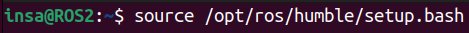source /opt/ros/humble/setup.bash
Après avoir tapé cette commande dans votre terminal, vous pourrez donc avoir accès à toutes les fonctions primaires de ROS2. Une autre méthode permet d'avoir automatiquement tous les terminaux sourcés. Cette seconde méthode sera vu dans la section Mise de la source dans fichier ~/.bashrc.
Lancer TurtleSim
-
Pour lancer TurtleSim, nous devons activer le nœud de TurtleSim. Pour ce faire nous devons utiliser une structure de commande particulière. Voici la structure à utiliser :
ros2 run <package_name> <executable_name>
Dans notre cas
<package_name>sera l'application TurtleSim qui se nommeraturtlesimet<executable_name>sera l'exécutable du nœud de TurtleSim qui seraturtlesim_node. -
Voici la commande à taper dans le terminal :
ros2 run turtlesim turtlesim_node

-
Une fenêtre "TurtleSim" va s'ouvrir :
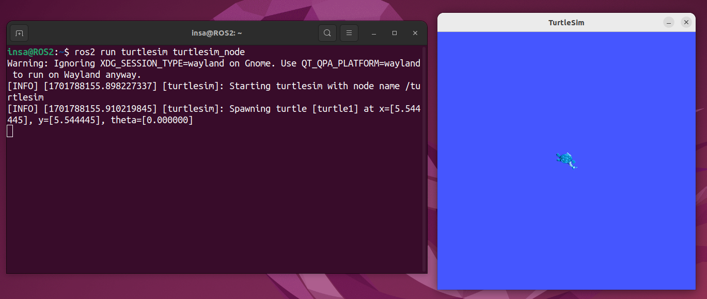 -
Plusieurs informations apparaissent dans le terminal :
TurtleSim a été démarré avec le nœud
/turtlesimUne tortue a été créée avec le nom
turtle1Et elle a été placée dans la fenêtre TurtleSim avec les coordonnées x, y et θ suivantes :
x=5.54,y=5.54et une orientationθ=0.00 rad
Lancer la télécommande
Dans cette partie, nous allons voir comment lancer une télécommande qui nous permettra de faire bouger la tortue, turtle1 dans la fenêtre TurtleSim.
-
Ouvrez un second terminal et tapez la commande pour ajouter la source à ce terminal.
source /opt/ros/humble/setup.bash
-
Pour lancer la télécommande, nous devons lancer le nœud de la télécommande. Voici la structure :
ros2 run <package_name> <executable_name>
Dans ce cas
<package_name>est TurtleSim qui se nommeraturtlesimet<executable_name>est l'exécutable du nœud de la télécommande qui seraturtle_teleop_key. -
Voici, finalement, la commande à taper dans le 2nd terminal :
ros2 run turtlesim turtle_teleop_key

Cela va démarrer la télécommande qui vous permettra de contrôler les mouvements de la tortue dans l'environnement TurtleSim en utilisant les touches du clavier.
-
Vous allez donc pouvoir contrôler la tortue avec les 4 flèches de votre clavier :

Nous verrons dans un des prochains tutoriels à quoi correspondent les rotations vers les orientations absolue avec les touches G,B,V,C,D,E,R et T.
Lancer TurtleSim et la télécommande dans le même terminal
-
Arrêtez la commande de de la télécommande TurtleSim dans le second terminal et aussi la commande de TurtleSim dans le premier terminal, en faisant un "
ctrl+C" dans chaque terminal. -
Fermez un des deux terminaux.
-
Sur le terminal qui vous reste, tapez la commande pour lancer le nœud de TurtleSim avec un "
&" à la fin . Le "&" a pour but de faire fonctionner TurtleSim en arrière-plan dans ce terminal.Voici la commande :
ros2 run turtlesim turtlesim_node &

Faites "
Entrer" et vous constaterez que vous pouvez de nouveau utiliser ce terminal. -
Tapez la commande pour avoir la télécommande
teleop_key:ros2 run turtlesim turtle_teleop_key

-
Arrêtez la télécommande en faisant "
ctrl+C". -
Arrêtez maintenant la commande qui à lancé TurtleSim en arrière plan. Pour retrouver la commande mise en arrière plan tapez la commande "
fg" ("fg" signifie foreground) puis faites "ctrl+C".
Vous avez réussi à faire bouger votre tortue dans TurtleSim à l'aide de la télécommande en ayant lancé le noeuds de TurtleSim en arrière plan. La prochaine étape concerne la mise automatique de la source de RO2 pour chaque nouveau terminal ouvert.
Mise de la source dans fichier ~/.bashrc
Cette partie consiste à ce que la source de ROS2 soit ajouté automatiquement pour chaque nouveau terminal que vous ouvrez. Pour ce faire suivez les instructions suivantes :
-
Ouvrez un terminal avec "
ctrl+alt+T", puis modifier le fichier.bashrcavec la commande suivante puis tapez votre mot de passe (lorsque vous rentrez votre mot de passe celui-ci ne s'affiche pas):sudo nano .bashrc

Explication de la commande :
sudo : nous l'utilisons pour lancer une commande dans un terminal en mode administrateur (pas obligatoire).
nano : c'est un éditeur de fichier et permet de les modifier.
.bashrc : c'est un fichier de configuration de notre machine virtuelle.
Donc la commande
sudo nano .bashrcpermet d'ouvrir le fichier.bashrcdans l'éditeur de fichiernanole tout en mode administrateur. -
Pour pouvoir sourcer automatiquement l'environnement ROS2 dans vos nouveaux terminaux, vous devez indiquer dans ce fichier le chemin du fichier setup de ROS2. Voici la ligne de code que vous avez à mettre à la fin de ce fichier :
source /opt/ros/humble/setup.bash
-
Ajoutez le chemin du fichier setup de ROS2 à la fin de ce fichier et vous devriez obtenir :

-
Sauvegardez et quittez le fichier avec "
ctrl+O", "Entrer" et ensuite "crtl+X".L'ajout de cette ligne de code permet au système de connaître automatiquement le chemin du fichier setup de ROS2. C'est-à-dire, que pour chaque nouveau Terminal que vous ouvrez, le fichier setup sera sourcé.
-
Fermez ce terminal soit en cliquant sur la croix en haut à droite soit en écrivant la commande "
exit" dans le terminal.
Le 1er tutoriel est fini. Passons au suivant pour contrôler la tortue en publiant des messages directement sur le topic turtle1/cmd_vel.
Visualisation des nœuds et topics avec rqt graph
Ouvrir rqt_graph
-
Ouvrez un terminal avec "
ctrl+alt+T" -
Lancez
rqt_graphen tapant la commande suivante et une fenêtrerqt_graphva s'ouvrir :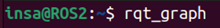rqt_graph
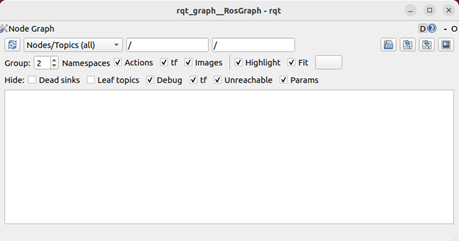Dans la fenêtre
rqt_graph, cliquez surNodes only(A côté des deux flèches bleues)Choisissez ensuite
Nodes/Topics (all).Décocher ensuite
Dead sinksetLeaf topicsde la partieHide.
rqt_graphpermet de voir l'interaction entre les différents nœuds et topics actifs en ce moment. Notrerqt_graphest vide.
Est-ce normal ? Oui, nous avons pour le moment aucun nœud actif dans les terminaux. De ce fait nous voyons rien sur ce graph
Lancer TurtleSim
Ouvrez un second Terminal.
-
Tapez la commande qui permet de lancer TurtleSim en arrière plan :
ros2 run turtlesim turtlesim_node &
-
Appuyez ensuite sur le bouton "Rafraîchir" de la fenêtre
rqt_graph(bouton avec 2 flèches bleues sur la gauche).Vous obtiendrez ceci :
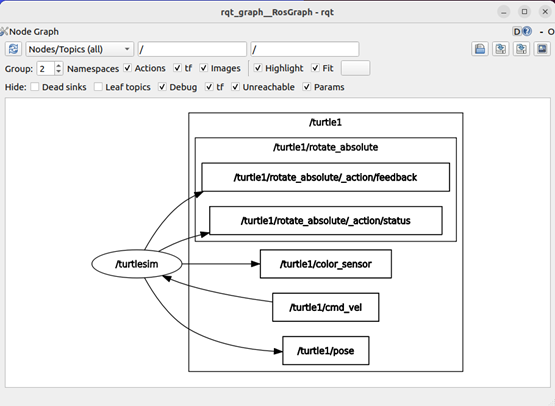
Vous pouvez donc voir le nœud turtlesim que vous venez de lancer avec la commande ci-dessus.
Vous pouvez voir aussi tous les topics, liés à la tortue /turtle1, qui peuvent interagir avec le nœud.
Vous retrouverez le topic /turtle1/cmd_vel qui sera utilisé dans la suite de ce tutoriel.
Lancer la télécommande
-
Tapez la commande suivante, dans le second terminal, pour lancer la télécommande :
ros2 run turtlesim turtle_teleop_key
-
Retournez sur la fenêtre
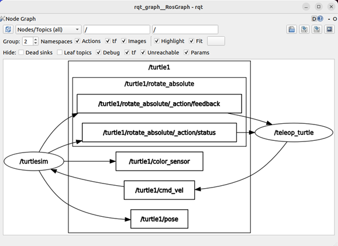rqt_graphet rafraîchissez le graph. Vous allez obtenir ceci :
Vous pouvez donc voir que le nœud de la télécommande est apparu lui aussi sous le nom /teleop_turtle. On peut voir que la télécommande ne peut agir que sur le topic /turtle1/cmd_vel.
Comprendre les topics avec TurtleSim
Trouver la liste des "topics" actifs
Fermez tous les terminaux ouverts.
Lancez TurtleSim dans un nouveau terminal.
-
Dans un second terminal, visualisez les topics actifs en tapant la commande :
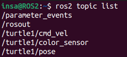ros2 topic list
Vous constaterez que vous avez dans la liste des topics actifs, les topics sur lesquels TurtleSim publie ses données. Nous avons déjà vu ces topics dans la section précédente.
Le topic qui nous intéresse est le topic /turtle1/cmd_vel.
Trouver les informations précises d'un "topic"
-
Tapez la commande suivante dans le second terminal :
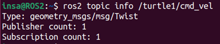ros2 topic info /turtle1/cmd_vel
-
Le topic
/turtle1/cmd_velaccepte uniquement les messages de typegeometry_msgs/msg/Twist.
On peut remarquer que nous avons la présence des termes "Publisher" et "Subscriber". Le Publisher est un noeud qui publie des données sur un topic et un Subscriber quant à lui est un noeud qui s'abonne à un topic pour recevoir les données que ce topic reçoit. Dans notre cas la télécommande de TurtleSim est un noeud "Publisher" du topic /turtle1/cmd_vel et TurtleSim est un noeud "Subscriber" de ce topic.
Trouver les caractéristiques d'un "geometry_msgs/msg/Twist"
-
Tapez la commande suivante, pour trouver les caractéristique d'un message de type
geometry_msgs/msg/Twist: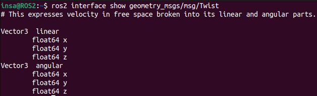ros2 interface show geometry_msgs/msg/Twist
-
Vous pouvez voir qu'un message de type
geometry_msgs/msg/Twistcontient deux vecteurs de dimension 3. Le premier pour indiquer les vitesses linéaires que l'on veut donner à la tortue et le second pour les vitesses angulaires.La tortue évoluant dans un système 2D, il sera uniquement possible de lui envoyer des vitesses linéaires selon x et y et une vitesse angulaire selon z. L'axe x est correspond à la direction de la tortue, l'axe y à la vitesse latérale de la tortue et l'axe z correspond la vitesse angulaire de la tortue en sachant que cet axe pointe vers vous.
Envoyer un geometry_msgs/msg/Twist sur le topic /turtle1/cmd_vel
-
Observez la structure de la commande permettant d'envoyer un message sur un topic :
ros2 topic pub <pub_frequency> <topic_name> <message_type> <message>
-
Tapez la commande suivante, pour envoyer un
geometry_msgs/msg/Twistsur le topic/turtle1/cmd_vel(en spécifiant en paramètre "--once" pour n'envoyer qu'un seul message sur ce topic) :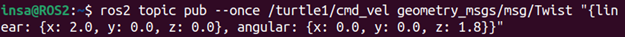ros2 topic pub --once /turtle1/cmd_vel geometry_msgs/msg/Twist "{linear: {x: 2.0, y: 0.0, z: 0.0}, angular: {x: 0.0, y: 0.0, z: 1.8}}"Vous pourrez voir dans le terminal que le
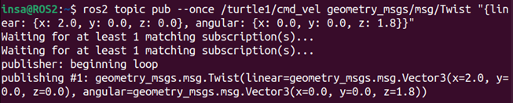geometry_msgs/msg/Twista été publié/turtle1/cmd_vel: -
On remarque que notre tortue
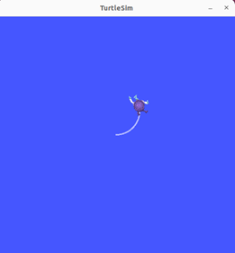turtle1a avancée en tournant sur la gauche.Ce qui correspond bien à une vitesse linéaire selon x et une vitesse angulaire selon z.
Envoyer un message en boucle sur le topic /turtle1/cmd_vel
-
Pour envoyer en boucle le message précédent, il vous suffit de modifier le paramètre "
--once" par "--rate <freq_Hz>" (<freq_Hz>correspond à la fréquence d'envoi du message). Dans notre cas, nous allons écrire le paramètre "--rate 1" pour envoyer ce message successivement à une fréquence de 1Hz.Tapez la commande suivante :
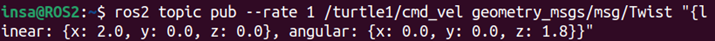ros2 topic pub --rate 1 /turtle1/cmd_vel geometry_msgs/msg/Twist "{linear: {x: 2.0, y: 0.0, z: 0.0}, angular: {x: 0.0, y: 0.0, z: 1.8}}" -
On remarque donc que le message est bien envoyé en boucle avec une fréquence de 1Hz et que la tortue tourne en rond :
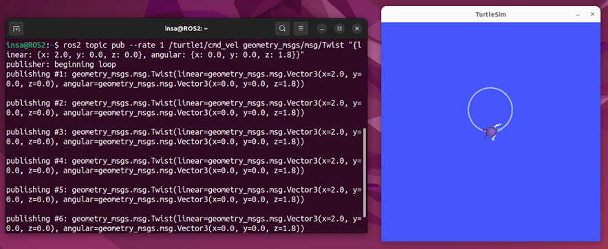Vous pourrez voir les messages qui ont été publiés sur le topic
/turtle1/cmd_vel, s'afficher toutes les secondes (car on à mis un rate de 1Hz) -
Arrêtez l'envoi de ce message périodique en faisant simplement "
crtl+C". -
Fermez l'ensemble des terminaux pour passer au tutoriel suivant !
La partie du tutoriel sur les topics est finie. Dans la partie suivante nous étudirons le fonctionnement des topics en utilisant TurtleSim et rqt.
Comprendre les topics avec TurtleSim et rqt
Ouvrir rqt
Ouvrez un nouveau terminal et vérifiez la source de ROS2
-
Tapez la commande suivante pour ouvrir
rqt: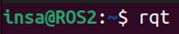rqt
Une fenêtre
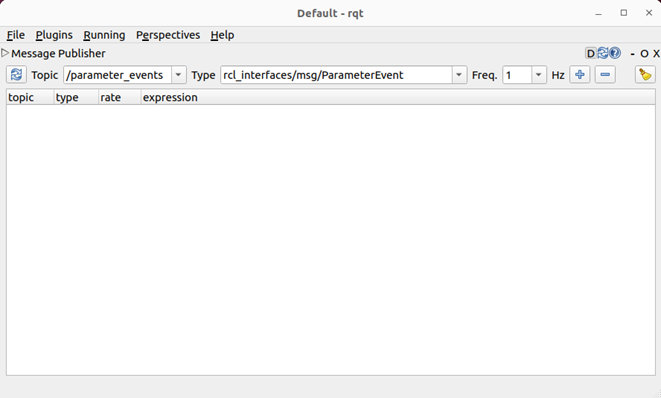rqtva s'ouvrir :Si vous arrivez sur
rqtmais pour autre chose que>Message Publisher. Allez dans Plugins, puis Topics et cliquez sur Message Publisher.Définition :
rqtest un outil de ROS et ROS2 permettant de visualiser, interagir et modifier la structure des nœuds, des topics et des services du système, en offrant une interface graphique pour le développement et le débogage de robots.Dans notre cas, nous allons utiliser
rqtpour envoyer des messages sur le topiccmd_veld'une tortue dans TurtleSim. -
Cliquez sur le menus déroulant des différents topics actifs. Vous verrez que les topics liés à la tortue de TurtleSim ne sont pas présents.
C'est normal, vous n'avez pas encore lancé TurtleSim.
Lancer TurtleSim
-
Ouvrez un nouveau terminal et lancez TurtleSim.
ros2 run turtlesim turtlesim_node
-
Cliquez sur les flèches bleues pour rafraîchir rqt et ensuite cliquez sur le menus déroulant des différents topics actifs. Les topics liés à TurtleSim sont apparu et sélectionnez le topic
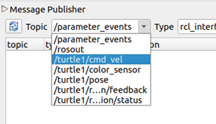/turtle1/cmd_vel: -
On remarque que
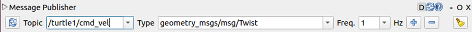rqttrouve directement le type de message à utiliser sur ce topic :
Envoyer un geometry_msgs/msg/Twist sur le topic /turtle1/cmd_vel avec rqt
-
Cliquez sur le "
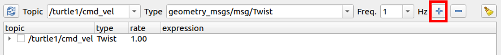+" bleu pour créer ungeometry_msgs/msg/Twist: -
Cliquez sur la petite flèche sur la gauche du message pour développer le message :
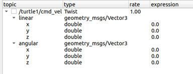 -
Paramétrez le message que vous allez envoyer. Choisissez les mêmes valeurs que pour la section Envoyer un message en boucle sur le topic /turtle1/cmd_vel 2. , soit une vitesse linéaire
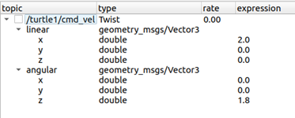x : 2.0, y : 0.0 , z : 0.0et une vitesse angulairex : 0.0, y : 0.0 , z : 1.8:La valeur du paramètre "
rate" est effective uniquement lorsque la case en haut à gauche du message est coché. Dans notre cas, nous voulons l'envoyer qu'une seule fois, donc laissez cette case décochée. -
Faites un clic droite sur le message à envoyer, puis cliquez sur
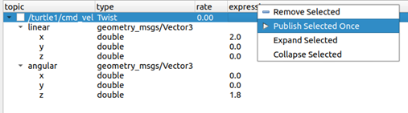Publish Selected Once(permet d'envoyer qu'un seul message)Vous pouvez alors voir votre tortue bouger dans la fenêtre TurtleSim :
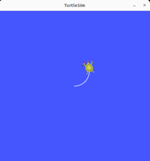 -
Amusez-vous en changeant les paramètres du message et puis en l'envoyant.
Cependant certains messages ne sont pas valides. Vous ne pouvez utiliser que les vitesses linéaires x et y (resp. déplacement avant/arrière et déplacement latéral droite/gauche) et une vitesse angulaire selon z (l'axe z pointant vers vous) car ces 3 paramètres permettent de déterminer la position et l'orientation de la tortue dans ce système 2D :
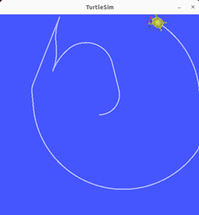
Envoyer un geometry_msgs/msg/Twist en boucle avec rqt
-
Utilisez la fonctionnalité
ratequi permet d'envoyer en boucle le même message. Modifiez les paramètres de votre message et aussi la valeur derate. La valeur de rate correspond à la fréquence d'envoi du message. -
Cochez la case à gauche du message pour que le paramètre
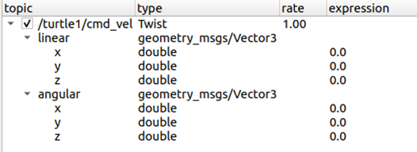ratesoit pris en compte :Vous verrez votre tortue bouger en boucle en fonction de votre message dès que vous aurez coché cette case. Décochez la case pour arrêter l'envoi cyclique de message.
Vous comprenez donc maintenant le fonctionnement et les relations entre les "nœuds" et "topics". Dans le prochain tutoriel vous allez utiliser et comprendre le fonctionnement des "actions" avec TurtleSim.
Comprendre les actions avec TurtleSim
Découvrir les actions
Faites "
crtl+C" dans tous les terminaux pour arrêter tous les processus en cours et fermez tous les terminaux ouverts.Ouvrez un terminal et lancez TurtleSim en arrière plan (Voir la section Lancer TurtleSim et la télécommande dans le même terminal 3.).
-
Lancez, ensuite, la télécommande dans le même terminal (Voir la section Lancer TurtleSim et la télécommande dans le même terminal 4.).
Vous pourez voir ce message dans la télécommande :

La deuxième ligne correspond aux actions que l'on peut demander à la tortue de TurtleSim. (La première ligne correspond à l'utilisation des flèches pour piloter la tortue avec le topic
/turtle1/cmd_vel, abordé précédemment dans les tutoriels).On remarque que les touches
G|B|V|C|D|E|R|Tforment un "carré" autour de la touche 'F' sur votre clavier. La position de chaque touche autour de 'F' correspond à cette orientation dans la fenêtre TurtleSim. Par exemple, le 'E' fera pivoter l'orientation de la tortue vers le coin supérieur gauche.Prêtez attention au terminal où le nœud
/turtlesimest exécuté. Chaque fois que vous appuierez sur l'une de ces touches, vous enverrez un objectif à un serveur d'action qui fait partie du nœud/turtlesim. L'objectif est de faire tourner la tortue dans une direction précise. -
Appuyez sur la touche '
E'. Un message relayant le résultat de l'objectif devrait s'afficher une fois que la tortue a terminée sa rotation :
Votre tortue à tournée vers le coin supérieur gauche :


La touche '
F', au centre du carré de touche, permet d'annuler l'objectif en cours. -
Appuyer, par exemple sur la touche '
C', pour faire tourner la tortue vers une coin inférieur gauche, puis sur la touche 'F' avant que la tortue ne termine sa rotation. Dans le terminal où le nœud/turtlesimest exécuté, vous verrez le message suivant :
Non seulement le côté client (votre entrée dans le teleop_key ) peut arrêter un objectif, mais le côté serveur (le noeud
/turtlesim) le peut également. Lorsque le serveur décide d'arrêter le traitement d'un objectif, on dit qu'il "abandonne" l'objectif. -
Essayez d'appuyer sur la touche '
T', puis sur la touche 'G' avant que la première rotation ne soit terminée. Dans le terminal où le nœud/turtlesimest exécuté, vous verrez le message suivant :
On remarque, sur la fenêtre TurtleSim, que la rotation vers '
T' (coin supérieur droit) a été annulée et a été remplacée par une rotation vers l'orientation de 'G' (droite).
Trouver la liste des "Action Servers" et "Action Clients" d'un noeud
Ouvrez un second terminal
-
Tapez la commande suivante :
ros2 node info /turtlesim

Cette commande renvoie une liste des "Subscribers", des "Publishers", des "Services", des "serveurs d'actions" et des "clients d'actions" de
/turtlesim:
On remarque que le nœud
/turtlesimest un serveur de l'action/turtle1/rotate_absolute. C'est-à-dire qu'il peut recevoir des actions à effectuer et qu'il renvoie aussi des données au client. -
Utilisez et modifiez la commande précédente pour trouver les informations du noeud
/teleop_turtle:ros2 node info /teleop_turtle

On remarque que le nœud
/teleop_turtleest un client de l'action/turtle1/rotate_absolute. C'est-à-dire qu'il peut envoyer actions que le serveur doit effectuer et il peut recevoir des données de la part du serveur.
Trouver la liste des actions disponibles et leurs informations
-
Tapez la commande suivante dans le second terminal pour avoir la liste des actions disponibles :
ros2 action list

Vous obtiendrez dans le terminal la liste des actions disponible :

Cependant, chaque action possède un type précis. Il est possible de l'afficher en ajoutant le paramètre "
-t" dans la commande précédente. -
Tapez la commande suivante pour obtenir la liste des actions ainsi que leur type directement:
ros2 action list -t

Entre crochets à droite de chaque nom d'action (dans notre cas, uniquement pour l'action
/turtle1/rotate_absolute) se trouve le type d'action,turtlesim/action/RotateAbsolute. Vous en aurez besoin lorsque vous voudrez exécuter une action à partir de la ligne de commande ou du code. -
Tapez la commande suivante dans le second terminal pour pouvoir analyser l'action
/turtle1/rotate_absolute:ros2 action info /turtle1/rotate_absolute

Vous obtiendrez dans le terminal les informations de cette action :

Cela nous indique ce que nous avons appris plus tôt en exécutant ros2 node info sur chaque nœud : Le noeud
/teleop_turtleest un client d'action et le noeud/turtlesimest un serveur d'action pour l'action/turtle1/rotate_absolute
Visualisation de l'action /turtle1/rotate_absolute avec rqt_graph
Tapez la commande pour ouvrir
rqt_graph, toujours dans le second terminal (Voir la section Visualisation des nœuds et topics avec rqt graph 1.).Faites les réglages, concernant les cases à cocher ou à décocher dans
rqt_graph(Voir la section Visualisation des nœuds et topics avec rqt graph 1.).-
Comme TurtleSim et la télécommande teleop_key sont lancés, les nœuds
/turtlesimet/teleop_turtlele sont aussi. Vous obtiendrez :
Vous pouvez constater que l'action
/turtle1/rotate_absolutepeut recevoir des données du nœud/turtlesim(serveur de l'action) et que le nœud/teleop_turtlepeut recevoir des données de cette action (client de l'action).
Trouver la structure du type d'action "turtlesim/action/RotateAbsolute"
Une autre information dont vous aurez besoin avant d'envoyer ou d'exécuter vous-même un objectif d'action est la structure du type de cette action.
Rappelez-vous que vous avez identifié précédemment le type de /turtle1/rotate_absolue en exécutant la commande $ ros2 action list -t (type : turtlesim/action/RotateAbsolute).
-
Entrez la commande suivante pour déterminer la structure de ce type d'action :
ros2 interface show turtlesim/action/RotateAbsolute

Vous obtiendrez dans le terminal :

-
Identifiez les différents paramètres :
La section du message au-dessus du premier "---" est la structure (type de données et nom) de la demande d'objectif.
La section suivante est la structure du résultat.
La dernière section est la structure du feedback.
On remarque que ces trois paramètres sont du type float32 (soit des chiffres à virgule codés sur 32 bits).
Envoyer un objectif à une action en ligne de commande
-
Observez la structure d'une commande pour envoyer un objectif à une action :
ros2 action send_goal <action_name> <action_type> <values>
-
Gardez un oeil sur la fenêtre TurtleSim, et entrez la commande suivante dans votre terminal ([θ] = radian):
ros2 action send_goal /turtle1/rotate_absolute turtlesim/action/RotateAbsolute "{theta: 1.57}"
Votre tortue, dans la fenêtre TurtleSim, va tourner. Vous obtiendrez cette réponse :

Chaque objectif est associé à un identifiant unique, mentionné dans le message de retour. De plus, vous pouvez observer le résultat, représenté par un champ nommé "delta", qui indique le déplacement par rapport à la position initiale.
-
Ajoutez le paramètre "
--feedback" à la commande ros2 action send_goal, pour voir le feedback d'un objectif. Changez la valeur de theta, par exempleθ=-1.57et n'oubliez pas d'ajouter le paramètre "--feedback" :ros2 action send_goal /turtle1/rotate_absolute turtlesim/action/RotateAbsolute "{theta: -1.57}" --feedback
Votre terminal vous renvoie le message :


Les actions sont comme des services qui vous permettent d'exécuter des tâches de longue durée. Ces actions fournissent un retour d'information régulier et peuvent être annulées.
Un système robotique utilisera probablement des actions pour la navigation. Un objectif d'action pourrait indiquer à un robot de se rendre à une position. Pendant que le robot navigue vers la position, il peut envoyer des mises à jour en cours de route (c'est-à-dire un retour d'information), puis un message de résultat final une fois qu'il à atteint sa destination.
TurtleSim dispose d'un serveur d'action auquel les clients d'action peuvent envoyer des objectifs pour faire bouger les tortues. Dans ce tutoriel, vous avez étudié cette action, /turtle1/rotate_absolute, pour avoir une meilleure idée de ce que sont les actions et comment elles fonctionnent.
Comprendre les services avec TurtleSim
Découvrir les services
-
Ouvrez un terminal et tapez la commande suivante pour avoir la liste des services actifs en ce moment :
ros2 service list

Le terminal ne vous renvoie rien. Est-ce normal ? Oui, car aucun noeud n'a encore été lancé et donc aucun service n'est disponible!
-
Lancez TurtleSim en arrière plan dans un second terminal
ros2 run turtlesim turtlesim_node &
-
Tapez à nouveau la commande pour avoir la liste des services actifs :
ros2 service list

Comme vous pouvez le voir, tous les services liés au noeud turtlesim et à la
turtle1sont visibles, donc actifs. -
Tapez la commande pour lancer la télécommande dans le second terminal et tapez à nouveau la commande pour avoir la liste des services actifs dans le premier terminal. Vous obtiendrez la liste de services actifs suivants :
ros2 run turtlesim turtle_teleop_key
ros2 service list

Vous verrez que les deux nœuds ont six services identiques avec des paramètres dans leurs noms. Presque tous les nœuds de ROS2 ont ces services d'infrastructure à partir desquels les paramètres sont construits.
Dans ce tutoriel, les services de paramètres seront omis de la discussion.
Pour l'instant, concentrons-nous sur les services spécifiques à turtlesim, /clear, /kill, /reset, /spawn, /turtle1/set_pen, /turtle1/teleport_absolute, et /turtle1/teleport_relative.
Trouver le type d'un service
Les services ont des types qui décrivent comment les données de demande et de réponse d'un service sont structurées. Les types de service sont définis de la même manière que les types de topics, sauf que les types de service ont deux parties : un message pour la demande et un autre pour la réponse.
-
Les noeuds, TurtleSim et la télécommande, doivent rester actifs pour cette section !
-
Observez la structure d'une commande pour trouver le type d'un service :
ros2 service type <service_name>
-
Utilisez cette commande pour le service
/clearde TurtleSim (Le service/clearpermet d'effacer la trace que la tortue laisse sur la fenêtre de TurtleSim après avoir bougée) :ros2 service type /clear

Le terminal vous renvoie :

Le type
Emptysignifie que l'appel de service n'envoie aucune donnée lorsqu'il émet une requête et ne reçoit aucune donnée lorsqu'il reçoit une réponse. -
Tapez la commande suivante, pour directement avoir la liste des services actifs et leur type respectif :
ros2 service list -t

Trouver tous les services actifs du même type
-
Observez la structure de la commande pour trouver les services d'un certain type :
ros2 service find <type_name>
-
Utilisez cette commande pour trouver tous les services actifs du type
Empty:ros2 service find std_srvs/srv/Empty

Le terminal vous renvoie :

Trouver la structure du type de service
-
Observez la structure de la commande pour trouver la structure d'un type de service :
ros2 interface show <type_name>
-
Utilisez cette commande pour trouver la structure du type de service
Empty:ros2 interface show std_srvs/srv/Empty
Le terminal ne vous renvoie rien et c'est normal car ce type de service est
Empty. Le typeEmptysignifie que l'appel de service n'envoie aucune donnée lorsqu'il émet une requête et ne reçoit aucune donnée lorsqu'il reçoit une réponse. -
Trouvez le type du service /spawn. Vous trouverez :
ros2 service type /spawn

-
Trouvez ensuite la structure du type du service
/spawnavec la commande :ros2 interface show turtlesim/srv/Spawn

Les informations au-dessus de la ligne
---nous indiquent les arguments nécessaires pour appeler/spawn.x, yetθdéterminent la pose 2D de la tortue engendrée, et name est clairement optionnel.Les informations sous la ligne ne sont pas nécessaires dans ce cas, mais elles peuvent vous aider à comprendre le type de données de la réponse que vous obtenez lors de l'appel du service
/spawn.
Appeler un service
-
Observez la structure de la commande pour appeler un service :
ros2 service call <service_name> <service_type> <arguments>
La partie
<arguments>est facultative. Par exemple, vous savez que les services du typeEmptyn'ont pas d'arguments. -
Utilisez cette structure de commande pour appeler le service
/clear. Le service clear à pour but d'effacer le chemin parcouru par la tortue dans la fenêtre TurtleSim. Avant d'utiliser cette commande pour effacer le chemin parcouru par la tortue faites bouger la tortue grâce à la télécommande. -
Tapez la commande suivante pour supprimer le tracé de la tortue :
ros2 service call /clear std_srvs/srv/Empty

Vous pourrez voir le changement suivant dans la fenêtre TurtleSim :


Faire spawn une nouvelle tortue dans TurtleSim
-
Faites spawn une nouvelle tortue en appelant le service
/spawnet en définissant des arguments. Lesd'entrée dans un appel de service à partir de la ligne de commande doivent être en syntaxe YAML.Voici la syntaxe :
ros2 service call /spawn turtlesim/srv/Spawn "{x: 2, y: 2, theta: 0.2, name: 'turtle_tutoriel'}"
Le terminal va vous renvoyer les informations suivantes :

Ces informations montrent que nous avons appelé le service spawn avec les données
x, yetθet qu'en sortie nous avons bien fait spawn une nouvelle tortue nommée comme on le souhaitait. -
Observez TurtleSim et vous verrez qu'une seconde tortue à apparu au coordonnées que vous avez écrit dans la commande :

Les nœuds peuvent communiquer en utilisant des services dans ROS 2. Contrairement à un topic - un modèle de communication à sens unique où un nœud publie des informations qui peuvent être consommées par un ou plusieurs subscribers - un service est un modèle de demande/réponse où un client fait une demande à un nœud fournissant le service et le service traite la demande et génère une réponse.
En général, vous ne souhaitez pas utiliser un service pour des appels continus ; des sujets ou même des actions conviendraient mieux.
Dans ce tutoriel, vous avez utilisé des outils de ligne de commande pour identifier, introspecter et appeler des services.